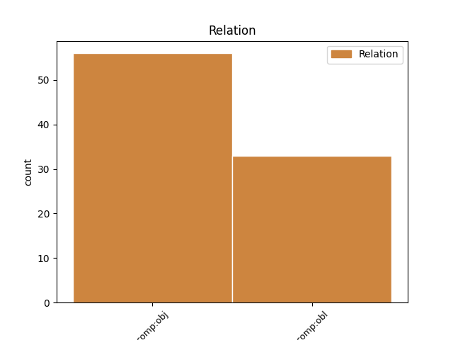
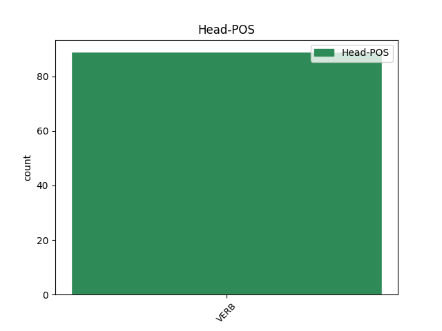
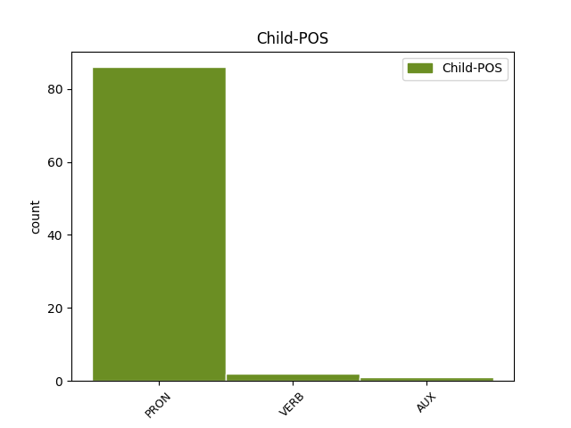

Distribution of features within this leaf



Agreement Rules sorted by frequency.
- When the dependent token is the direct object complements(comp:obj) of the head token,
1 Ma _ _ _ _ 0 _ _ _
2 c' _ _ _ _ 0 _ _ _
3 est _ _ _ _ 0 _ _ _
4 aussi _ _ _ _ 0 _ _ _
5 une _ _ _ _ 0 _ _ _
6 tragédie _ _ _ _ 0 _ _ _
7 pour _ _ _ _ 0 _ _ _
8 les _ _ _ _ 0 _ _ _
9 gens _ _ _ _ 0 _ _ _
10 qui _ _ _ _ 0 _ _ _
11 les le PRON PE Number=Plur|Person=3|PronType=Prs 12 comp:obj _ _
12 mangent manger VERB V Mood=Ind|Number=Plur|Person=3|Tense=Pres|VerbForm=Fin 0 _ _ _
13 parce _ _ _ _ 0 _ _ _
14 qu' _ _ _ _ 0 _ _ _
15 ils _ _ _ _ 0 _ _ _
16 ne _ _ _ _ 0 _ _ _
17 savent _ _ _ _ 0 _ _ _
18 pas _ _ _ _ 0 _ _ _
19 que _ _ _ _ 0 _ _ _
20 c' _ _ _ _ 0 _ _ _
21 est _ _ _ _ 0 _ _ _
22 de _ _ _ _ 0 _ _ _
23 la _ _ _ _ 0 _ _ _
24 viande _ _ _ _ 0 _ _ _
25 toxique _ _ _ _ 0 _ _ _
26 . _ _ _ _ 0 _ _ _
1 Il _ _ _ _ 0 _ _ _
2 n' _ _ _ _ 0 _ _ _
3 y _ _ _ _ 0 _ _ _
4 a _ _ _ _ 0 _ _ _
5 pas _ _ _ _ 0 _ _ _
6 de _ _ _ _ 0 _ _ _
7 mécanisme _ _ _ _ 0 _ _ _
8 dans _ _ _ _ 0 _ _ _
9 ce _ _ _ _ 0 _ _ _
10 jeu _ _ _ _ 0 _ _ _
11 qui _ _ _ _ 0 _ _ _
12 leur lui PRON PE Person=3|PronType=Prs 13 comp:obl _ _
13 permette permettre VERB V Mood=Sub|Number=Sing|Person=3|Tense=Pres|VerbForm=Fin 0 _ _ _
14 d' _ _ _ _ 0 _ _ _
15 aller _ _ _ _ 0 _ _ _
16 ailleurs _ _ _ _ 0 _ _ _
17 que _ _ _ _ 0 _ _ _
18 dans _ _ _ _ 0 _ _ _
19 une _ _ _ _ 0 _ _ _
20 pile _ _ _ _ 0 _ _ _
21 de _ _ _ _ 0 _ _ _
22 plus _ _ _ _ 0 _ _ _
23 en _ _ _ _ 0 _ _ _
24 plus _ _ _ _ 0 _ _ _
25 grande _ _ _ _ 0 _ _ _
26 de _ _ _ _ 0 _ _ _
27 chips _ _ _ _ 0 _ _ _
28 polystyrène _ _ _ _ 0 _ _ _
29 indigestes _ _ _ _ 0 _ _ _
30 . _ _ _ _ 0 _ _ _
Disagree Examples:
1 Je _ _ _ _ 0 _ _ _
2 déclare _ _ _ _ 0 _ _ _
3 reprise _ _ _ _ 0 _ _ _
4 la _ _ _ _ 0 _ _ _
5 session _ _ _ _ 0 _ _ _
6 de _ _ _ _ 0 _ _ _
7 le _ _ _ _ 0 _ _ _
8 Parlement _ _ _ _ 0 _ _ _
9 européen _ _ _ _ 0 _ _ _
10 qui _ _ _ _ 0 _ _ _
11 avait _ _ _ _ 0 _ _ _
12 été _ _ _ _ 0 _ _ _
13 interrompue _ _ _ _ 0 _ _ _
14 le _ _ _ _ 0 _ _ _
15 vendredi _ _ _ _ 0 _ _ _
16 17 _ _ _ _ 0 _ _ _
17 décembre _ _ _ _ 0 _ _ _
18 dernier _ _ _ _ 0 _ _ _
19 et _ _ _ _ 0 _ _ _
20 je _ _ _ _ 0 _ _ _
21 vous vous PRON PE Number=Plur|Person=2|PronType=Prs 22 comp:obl _ _
22 renouvelle renouveler VERB V Mood=Ind|Number=Sing|Person=1|Tense=Pres|VerbForm=Fin 0 _ _ _
23 tous _ _ _ _ 0 _ _ _
24 mes _ _ _ _ 0 _ _ _
25 voeux _ _ _ _ 0 _ _ _
26 en _ _ _ _ 0 _ _ _
27 espérant _ _ _ _ 0 _ _ _
28 que _ _ _ _ 0 _ _ _
29 vous _ _ _ _ 0 _ _ _
30 avez _ _ _ _ 0 _ _ _
31 passé _ _ _ _ 0 _ _ _
32 de _ _ _ _ 0 _ _ _
33 bonnes _ _ _ _ 0 _ _ _
34 vacances _ _ _ _ 0 _ _ _
35 . _ _ _ _ 0 _ _ _
1 Je _ _ _ _ 0 _ _ _
2 vous vous PRON PE Number=Plur|Person=2|PronType=Prs 3 comp:obj _ _
3 invite inviter VERB V Mood=Ind|Number=Sing|Person=3|Tense=Pres|VerbForm=Fin 0 _ _ _
4 à _ _ _ _ 0 _ _ _
5 vous _ _ _ _ 0 _ _ _
6 lever _ _ _ _ 0 _ _ _
7 pour _ _ _ _ 0 _ _ _
8 cette _ _ _ _ 0 _ _ _
9 minute _ _ _ _ 0 _ _ _
10 de _ _ _ _ 0 _ _ _
11 silence _ _ _ _ 0 _ _ _
12 . _ _ _ _ 0 _ _ _
1 C' _ _ _ _ 0 _ _ _
2 est _ _ _ _ 0 _ _ _
3 exactement _ _ _ _ 0 _ _ _
4 à _ _ _ _ 0 _ _ _
5 ce _ _ _ _ 0 _ _ _
6 moment _ _ _ _ 0 _ _ _
7 -là _ _ _ _ 0 _ _ _
8 que _ _ _ _ 0 _ _ _
9 vous _ _ _ _ 0 _ _ _
10 pourrez _ _ _ _ 0 _ _ _
11 , _ _ _ _ 0 _ _ _
12 en _ _ _ _ 0 _ _ _
13 effet _ _ _ _ 0 _ _ _
14 , _ _ _ _ 0 _ _ _
15 si _ _ _ _ 0 _ _ _
16 vous _ _ _ _ 0 _ _ _
17 le le PRON P Gender=Masc|Number=Sing|Person=3|PronType=Prs 18 comp:obj _ _
18 souhaitez souhaiter VERB V Mood=Ind|Number=Plur|Person=2|Tense=Pres|VerbForm=Fin 0 _ _ _
19 , _ _ _ _ 0 _ _ _
20 soulever _ _ _ _ 0 _ _ _
21 cette _ _ _ _ 0 _ _ _
22 question _ _ _ _ 0 _ _ _
23 , _ _ _ _ 0 _ _ _
24 c'est-à-dire _ _ _ _ 0 _ _ _
25 jeudi _ _ _ _ 0 _ _ _
26 avant _ _ _ _ 0 _ _ _
27 le _ _ _ _ 0 _ _ _
28 début _ _ _ _ 0 _ _ _
29 de _ _ _ _ 0 _ _ _
30 la _ _ _ _ 0 _ _ _
31 présentation _ _ _ _ 0 _ _ _
32 de _ _ _ _ 0 _ _ _
33 le _ _ _ _ 0 _ _ _
34 rapport _ _ _ _ 0 _ _ _
35 . _ _ _ _ 0 _ _ _
1 Cependant _ _ _ _ 0 _ _ _
2 , _ _ _ _ 0 _ _ _
3 je _ _ _ _ 0 _ _ _
4 vous vous PRON PE Number=Plur|Person=2|PronType=Prs 5 comp:obl _ _
5 demande demander VERB V Mood=Ind|Number=Sing|Person=1|Tense=Pres|VerbForm=Fin 0 _ _ _
6 , _ _ _ _ 0 _ _ _
7 conformément _ _ _ _ 0 _ _ _
8 à _ _ _ _ 0 _ _ _
9 l' _ _ _ _ 0 _ _ _
10 orientation _ _ _ _ 0 _ _ _
11 désormais _ _ _ _ 0 _ _ _
12 constamment _ _ _ _ 0 _ _ _
13 exprimée _ _ _ _ 0 _ _ _
14 par _ _ _ _ 0 _ _ _
15 le _ _ _ _ 0 _ _ _
16 parlement _ _ _ _ 0 _ _ _
17 européen _ _ _ _ 0 _ _ _
18 et _ _ _ _ 0 _ _ _
19 toute _ _ _ _ 0 _ _ _
20 la _ _ _ _ 0 _ _ _
21 communauté _ _ _ _ 0 _ _ _
22 européenne _ _ _ _ 0 _ _ _
23 , _ _ _ _ 0 _ _ _
24 d' _ _ _ _ 0 _ _ _
25 intervenir _ _ _ _ 0 _ _ _
26 auprès _ _ _ _ 0 _ _ _
27 de _ _ _ _ 0 _ _ _
28 le _ _ _ _ 0 _ _ _
29 président _ _ _ _ 0 _ _ _
30 et _ _ _ _ 0 _ _ _
31 de _ _ _ _ 0 _ _ _
32 le _ _ _ _ 0 _ _ _
33 gouverneur _ _ _ _ 0 _ _ _
34 de _ _ _ _ 0 _ _ _
35 le _ _ _ _ 0 _ _ _
36 Texas _ _ _ _ 0 _ _ _
37 , _ _ _ _ 0 _ _ _
38 monsieur _ _ _ _ 0 _ _ _
39 Bush _ _ _ _ 0 _ _ _
40 , _ _ _ _ 0 _ _ _
41 en _ _ _ _ 0 _ _ _
42 faisant _ _ _ _ 0 _ _ _
43 jouer _ _ _ _ 0 _ _ _
44 le _ _ _ _ 0 _ _ _
45 prestige _ _ _ _ 0 _ _ _
46 de _ _ _ _ 0 _ _ _
47 votre _ _ _ _ 0 _ _ _
48 mandat _ _ _ _ 0 _ _ _
49 et _ _ _ _ 0 _ _ _
50 de _ _ _ _ 0 _ _ _
51 l' _ _ _ _ 0 _ _ _
52 institution _ _ _ _ 0 _ _ _
53 que _ _ _ _ 0 _ _ _
54 vous _ _ _ _ 0 _ _ _
55 représentez _ _ _ _ 0 _ _ _
56 , _ _ _ _ 0 _ _ _
57 car _ _ _ _ 0 _ _ _
58 c' _ _ _ _ 0 _ _ _
59 est _ _ _ _ 0 _ _ _
60 monsieur _ _ _ _ 0 _ _ _
61 Bush _ _ _ _ 0 _ _ _
62 qui _ _ _ _ 0 _ _ _
63 a _ _ _ _ 0 _ _ _
64 le _ _ _ _ 0 _ _ _
65 pouvoir _ _ _ _ 0 _ _ _
66 de _ _ _ _ 0 _ _ _
67 suspendre _ _ _ _ 0 _ _ _
68 la _ _ _ _ 0 _ _ _
69 condamnation _ _ _ _ 0 _ _ _
70 à _ _ _ _ 0 _ _ _
71 mort _ _ _ _ 0 _ _ _
72 et _ _ _ _ 0 _ _ _
73 de _ _ _ _ 0 _ _ _
74 gracier _ _ _ _ 0 _ _ _
75 le _ _ _ _ 0 _ _ _
76 condamné _ _ _ _ 0 _ _ _
77 . _ _ _ _ 0 _ _ _
1 Merci _ _ _ _ 0 _ _ _
2 , _ _ _ _ 0 _ _ _
3 monsieur _ _ _ _ 0 _ _ _
4 Segni _ _ _ _ 0 _ _ _
5 , _ _ _ _ 0 _ _ _
6 je _ _ _ _ 0 _ _ _
7 le le PRON P Gender=Masc|Number=Sing|Person=3|PronType=Prs 8 comp:obj _ _
8 ferai faire VERB V Mood=Ind|Number=Sing|Person=1|Tense=Fut|VerbForm=Fin 0 _ _ _
9 bien _ _ _ _ 0 _ _ _
10 volontiers _ _ _ _ 0 _ _ _
11 . _ _ _ _ 0 _ _ _